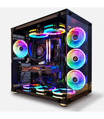

Bienvenue sur le guide d'achat PC Gamer
Tous les PC au meilleurs prix

Vous êtes à la recherche d'un PC au meilleur prix ? Notre site est fait pour vous... Nous vouz proposons une large gamme de PC Gamers, deja assemblés ou non, avec nos partenaires. Si vous êtes un minimum à l'aise avec l'informatique et que vous êtes un peu bricoleur, montez votre pc vous même, vous économiserez de l'argent ! Sinon choisissez-en un deja assemblé...